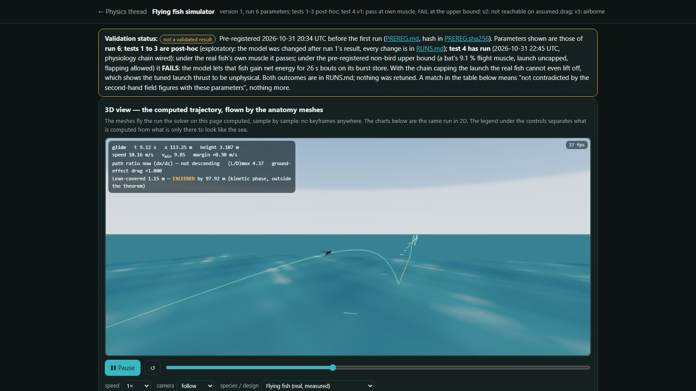
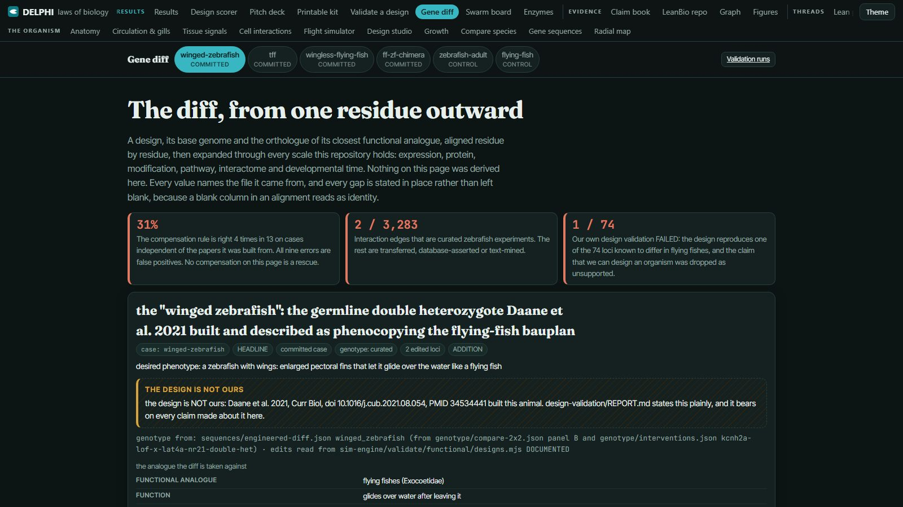
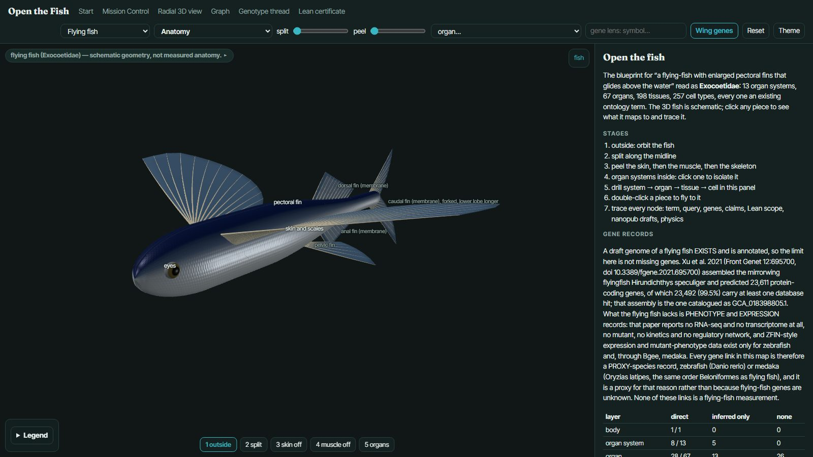
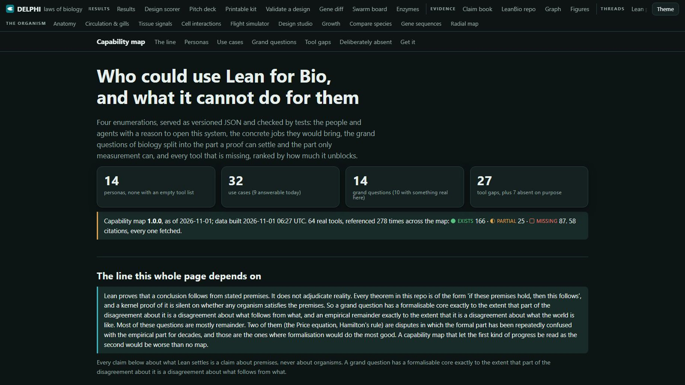
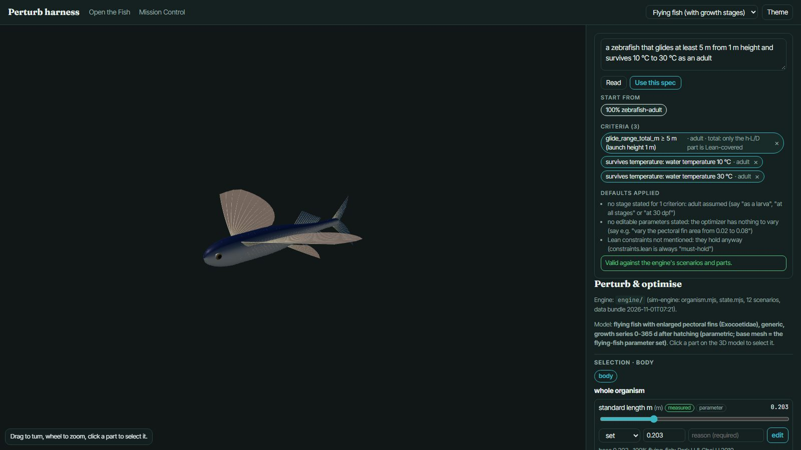
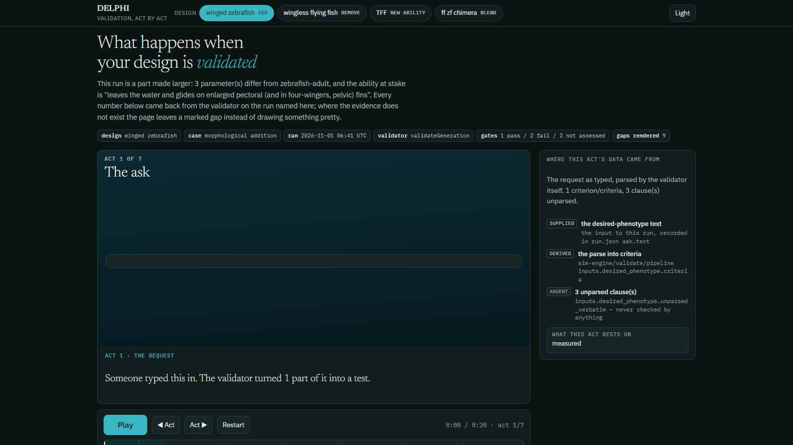
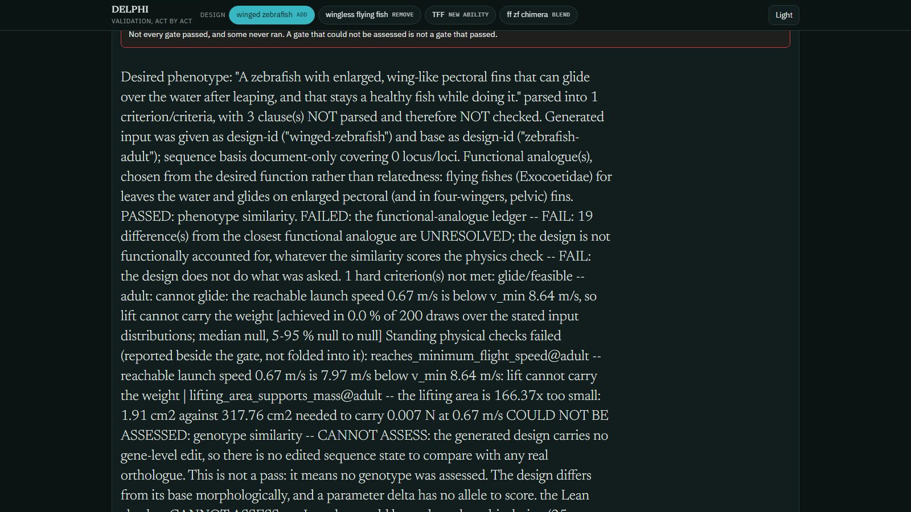

The thing experts know and cannot write down.
theorem glide_range_bound
(h : 0 < ld) (hh : 0 ≤ height) :
range ≤ height * ld := by
simpa [range] using
mul_le_mul_of_nonneg_left h hh
A zebrafish given enlarged, wing‑like pectoral fins
will glide over water after leaving it.
And they are extraordinarily good at mathematics.
machine‑checked theorems
programmes and drugs,
not individual trials
You upload your own nanopub‑backed theorem.

“Lean proves that a conclusion follows from stated premises. It does not adjudicate reality.”
Decentralised agent swarms distilled the assertions into nanopubs and debated the evidence before anything was formalised.
$ node mcp/cli.mjs check designs/winged-zebrafish.json
"lawset": "1.8.1",
"summary": { "violated": 0, "holds": 0,
"out_of_scope": 18, "cannot_evaluate": 17 },
"verdicts": [ { "law_id": "thompson1917-ch02-06",
"verdict": "cannot-evaluate", "binding": true,
"missing": ["mass_kg","finArea_m2",
"CLmax","airspeed_m_s"] } ]
The theorems constrain every one of these layers.

The same physics judged every one of them. Three inventions, with the numbers we hold.
Physics simulation, flow matching and developmental simulation — pre‑registered before the first run. Post‑hoc tests are marked post‑hoc on the page itself.
Every gap is stated in place rather than left blank, because a blank column in an alignment reads as identity.


So anyone can design their own organism — and be told no by the same gates.
If it is not, the design was never specified — only described.